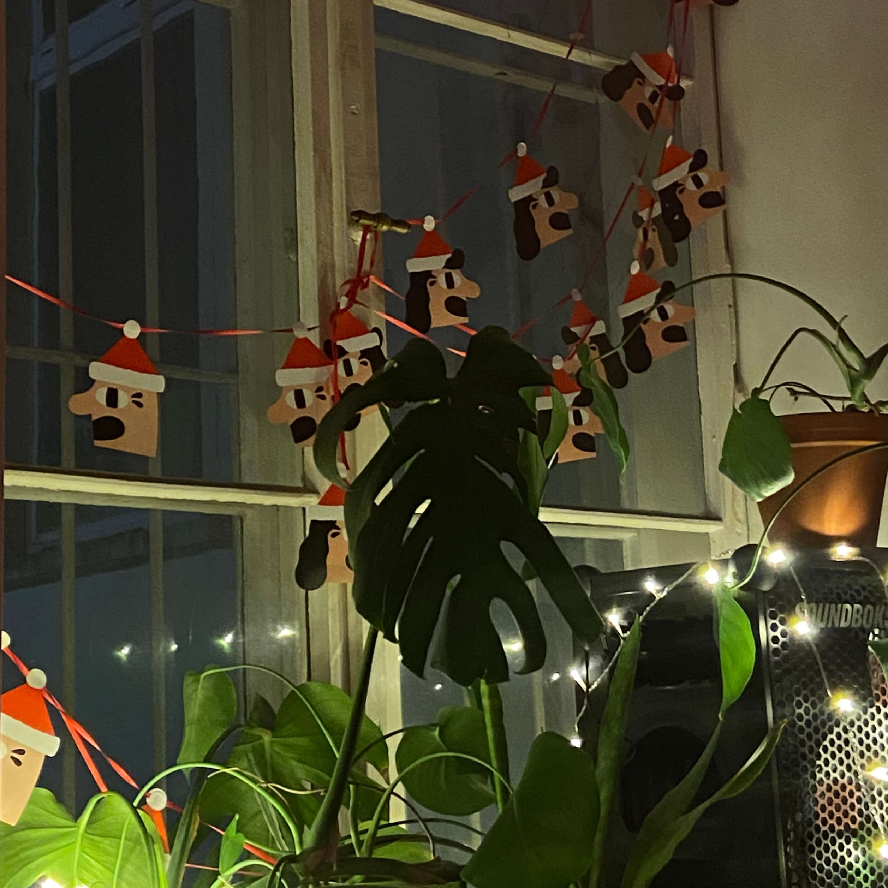
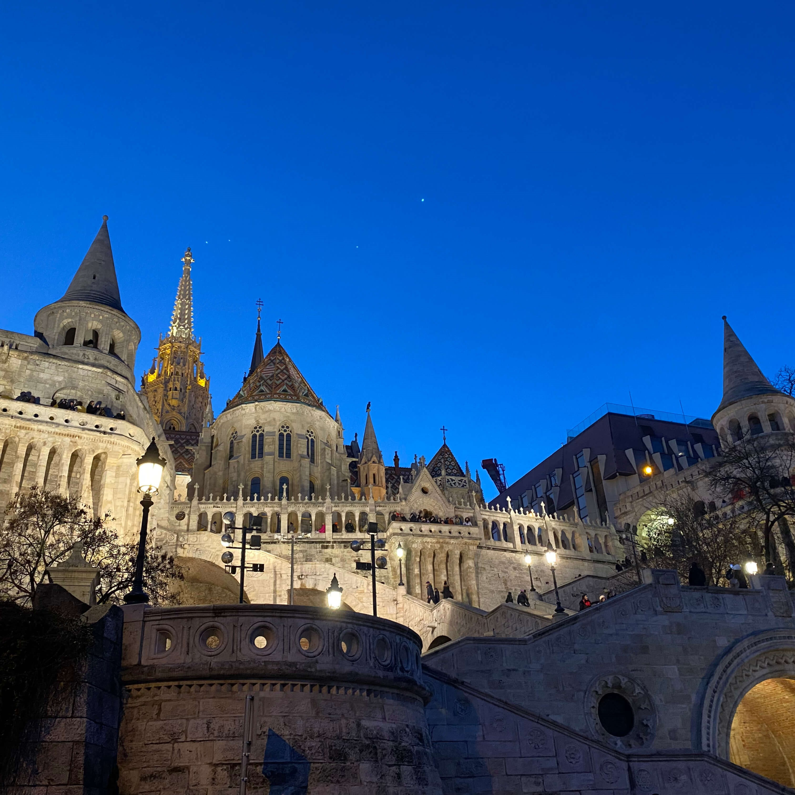
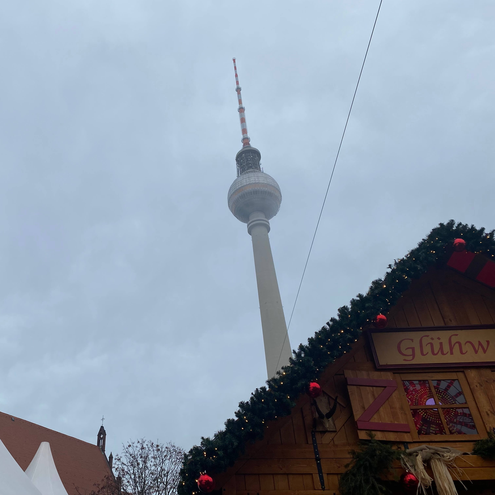
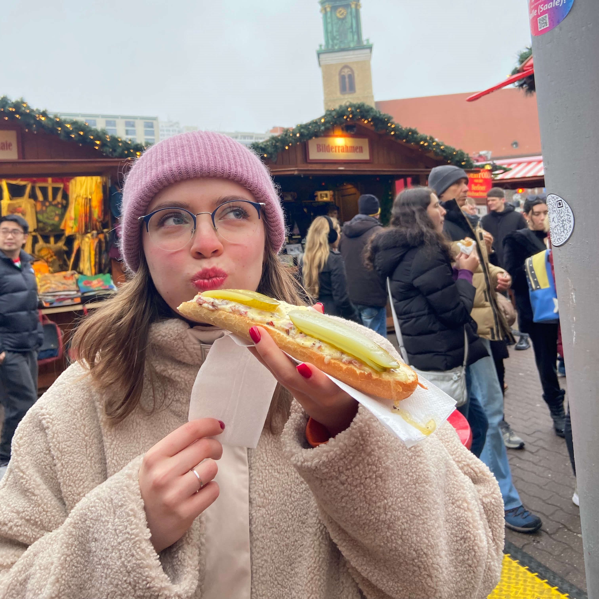

Девять дней зимней сказки в двух городах с совсем разным характером. Глинтвейн, кюртёшкалач и рождественская магия без туристической суеты.

Прилетаем, заселяемся в отель. Вечером — первая прогулка по рождественскому центру, чтобы поймать атмосферу и настроиться на праздник.
Площадь Вёрёшмарти — старейшая и самая красивая ярмарка Будапешта, работает с 1998 года. 150+ деревянных домиков, гигантская ёлка, кафе Gerbeaud рядом.

Главное световое шоу города — и одна из лучших рождественских ярмарок Европы.
Advent Bazilika на площади Святого Иштвана — несколько лет подряд признаётся лучшей рождественской ярмаркой Европы. Каждый вечер в 17:30 — световое 3D-шоу прямо на фасаде базилики.
Каток в центре площади, более 100 местных ремесленников. Пробуем: кюртёшкалач, форралт бор (венгерский глинтвейн), бейгли.
С утра — купальни Сечени, идеально сочетаются с зимней атмосферой. Вечером — прогулка вдоль Дуная, ночной Парламент в рождественских огнях.
Едем туда, где Рождество празднуют без туристических толп.
Ярмарка в Обуде — вдали от центра, более спокойная и демократичная атмосфера. Вечером — свободное время: винтажные магазины, сувениры, куда сходить поужинать.
Последний день в городе — в своём темпе. Можно вернуться на понравившуюся ярмарку, докупить подарки или просто погулять по вечернему городу перед перелётом.
Вылет в Берлин. Заселяемся в отель, вечером — первая прогулка по рождественскому Берлину.

Одна из самых популярных рождественских ярмарок города — в самом сердце исторического центра.
Жандарменмаркт — немецкие колбаски, картофельные оладьи, горячий шоколад. Каток прямо на территории ярмарки.
Вечером — ярмарка у Красной ратуши: карусели и еда со всего мира — Венгрия, Индия, Япония, Перу, Корея.
Признанная самой популярной ярмаркой города — и один из самых атмосферных зимних рынков Европы.
Ярмарка у дворца Шарлоттенбург — световое шоу и праздничная музыка на фоне дворцового фасада.
Вечером — Historischer Weihnachtsmarkt на RAW-Gelände, нестандартная ярмарка в духе берлинского андеграунда.
Свободное утро — успеваем докупить подарки и сувениры. Вылет домой. Подберу оптимальные билеты под ваш бюджет.
Как платитьОплата частями:
10 000 ₽ предоплата до получения визы
50 000 ₽ после одобрения визы
Остаток в евро в аэропорту
Оплачивается отдельно: авиабилеты, визовый сбор и сбор визового центра.
